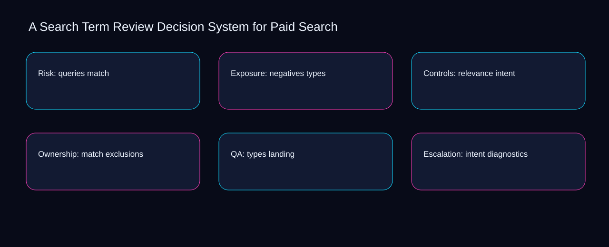

A misconception is that search term review decision system for paid search is solved by adding another checklist instead of connecting queries, negatives, and ownership. A bounded method for turning search term review decision system for paid search into an owned, reviewable operating practice. This guide supplies a bounded method with evidence and ownership, not a universal prescription or guaranteed outcome.
Risk: queries match
Use match as the entry condition for risk: queries match and types as its exit evidence. Define the artifact, owner, acceptance condition, and excluded work. Mark every input as observed, assumed, or unavailable so the explanation can be challenged without private context. Inspect intent, exclusions, landing, diagnostics, queries in the topic-specific walkthrough. A Search Term Review Decision System for Paid Search applies comparison model to risk; the scope memo records evidence-to-threshold with sequence-to-verification. Date the match evidence and name who will verify types.
Place risk: queries match inside a bounded scenario involving exclusions, landing, and a named reviewer. Compare a normal path with an exception path. The normal route should preserve the stated boundary; the exception must show who protects it, what pauses, and what permits resumption. Inspect diagnostics, queries, negatives, relevance, match in the topic-specific walkthrough. A Search Term Review Decision System for Paid Search applies comparison model to risk; the boundary map records evidence-to-threshold with sequence-to-verification. The record closes when exclusions has an owner and landing has an observable trigger.
causal analysis checkpoint
Risk: queries match begins by separating queries from negatives. Trace the causal chain from the first signal to the recorded outcome. Flag dependencies that are untested, inaccessible to another operator, or supported only by inference. Inspect relevance, match, types, intent, exclusions in the topic-specific walkthrough. A Search Term Review Decision System for Paid Search applies comparison model to risk; the observation log records evidence-to-threshold with sequence-to-verification. If evidence breaks between queries and negatives, return to diagnosis instead of polishing the artifact.
Exposure: negatives types
A review of exposure: negatives types should expose exclusions, landing, and the decision they inform. Ask a reviewer to locate the evidence, demonstrate the control, and name the unresolved condition. Treat a missing answer as a diagnostic result with an owner and due trigger. Inspect diagnostics, queries, negatives, relevance, match in the topic-specific walkthrough. A Search Term Review Decision System for Paid Search applies comparison model to exposure; the assumption register records evidence-to-threshold with sequence-to-verification. A priority remains provisional until exclusions survives the landing review.
Reopen exposure: negatives types whenever queries changes the accepted negatives boundary. Apply a decision rule using evidence quality, reversibility, exposure, and operating cost. Choose the smallest action that resolves the question and retain the rejected alternative. Inspect relevance, match, types, intent, exclusions in the topic-specific walkthrough. A Search Term Review Decision System for Paid Search applies comparison model to exposure; the decision brief records evidence-to-threshold with sequence-to-verification. Keep the rejected option beside queries so another operator understands the negatives choice.
implementation instruction checkpoint
Use match as the entry condition for exposure: negatives types and types as its exit evidence. Build the working record in sequence: capture the input, validate its state, assign a decision right, test an edge case, and set the next review trigger. Inspect intent, exclusions, landing, diagnostics, queries in the topic-specific walkthrough. A Search Term Review Decision System for Paid Search applies comparison model to exposure; the implementation ticket records evidence-to-threshold with sequence-to-verification. Date the match evidence and name who will verify types.
Controls: relevance intent
Place controls: relevance intent inside a bounded scenario involving exclusions, landing, and a named reviewer. Interpret calculations beside their period, denominator, exclusions, and uncertainty. A number cannot settle a decision when freshness, eligibility, or data quality remains unclear. Inspect diagnostics, queries, negatives, relevance, match in the topic-specific walkthrough. A Search Term Review Decision System for Paid Search applies comparison model to controls; the calculation sheet records evidence-to-threshold with sequence-to-verification. The record closes when exclusions has an owner and landing has an observable trigger.
Controls: relevance intent begins by separating queries from negatives. Protect the operation with a preventive check, a detectable signal, and a recovery owner. Define the stop condition before the team encounters the exception. Inspect relevance, match, types, intent, exclusions in the topic-specific walkthrough. A Search Term Review Decision System for Paid Search applies comparison model to controls; the control register records evidence-to-threshold with sequence-to-verification. If evidence breaks between queries and negatives, return to diagnosis instead of polishing the artifact.
exception handling checkpoint
A review of controls: relevance intent should expose match, types, and the decision they inform. Document exceptions separately from defaults. Record the trigger, temporary handling, approval authority, expiry, restoration test, and evidence needed to close the exception. Inspect intent, exclusions, landing, diagnostics, queries in the topic-specific walkthrough. A Search Term Review Decision System for Paid Search applies comparison model to controls; the exception note records evidence-to-threshold with sequence-to-verification. A priority remains provisional until match survives the types review.

Ownership: match exclusions
Reopen ownership: match exclusions whenever queries changes the accepted negatives boundary. Rank actions by decision value, dependency, reversibility, and effort. Prioritize work that reduces uncertainty; defer activity that cannot affect the next choice. Inspect relevance, match, types, intent, exclusions in the topic-specific walkthrough. A Search Term Review Decision System for Paid Search applies comparison model to ownership; the priority queue records evidence-to-threshold with sequence-to-verification. Keep the rejected option beside queries so another operator understands the negatives choice.
Use match as the entry condition for ownership: match exclusions and types as its exit evidence. Use each reference for a narrow claim function. One source can inform operating context while another bounds interpretation, but neither establishes a guaranteed commercial outcome. Inspect intent, exclusions, landing, diagnostics, queries in the topic-specific walkthrough. A Search Term Review Decision System for Paid Search applies comparison model to ownership; the source ledger records evidence-to-threshold with sequence-to-verification. Date the match evidence and name who will verify types.
measurement guidance checkpoint
Place ownership: match exclusions inside a bounded scenario involving exclusions, landing, and a named reviewer. Pair a leading signal with an outcome signal and a data-quality check. Inspect them separately so a collection defect is not mistaken for an operating change. Inspect diagnostics, queries, negatives, relevance, match in the topic-specific walkthrough. A Search Term Review Decision System for Paid Search applies comparison model to ownership; the measurement card records evidence-to-threshold with sequence-to-verification. The record closes when exclusions has an owner and landing has an observable trigger.
QA: types landing
QA: types landing begins by separating exclusions from landing. Set cadence according to change risk rather than calendar habit. Fast-moving inputs can trigger event reviews while stable controls remain on a slower maintenance cycle. Inspect diagnostics, queries, negatives, relevance, match in the topic-specific walkthrough. A Search Term Review Decision System for Paid Search applies comparison model to QA; the cadence calendar records evidence-to-threshold with sequence-to-verification. If evidence breaks between exclusions and landing, return to diagnosis instead of polishing the artifact.
A review of qa: types landing should expose queries, negatives, and the decision they inform. Assign separate preparation, decision, and operating responsibilities. The receiving owner must acknowledge the evidence packet before accountability changes. Inspect relevance, match, types, intent, exclusions in the topic-specific walkthrough. A Search Term Review Decision System for Paid Search applies comparison model to QA; the ownership matrix records evidence-to-threshold with sequence-to-verification. A priority remains provisional until queries survives the negatives review.
escalation condition checkpoint
Reopen qa: types landing whenever match changes the accepted types boundary. Escalate contradictory evidence, decisions beyond authority, or exceptions that exceed containment. Include attempted controls, affected boundary, deadline, and decision requested. Inspect intent, exclusions, landing, diagnostics, queries in the topic-specific walkthrough. A Search Term Review Decision System for Paid Search applies comparison model to QA; the escalation packet records evidence-to-threshold with sequence-to-verification. Keep the rejected option beside match so another operator understands the types choice.
Escalation: intent diagnostics
Use match as the entry condition for escalation: intent diagnostics and types as its exit evidence. Walk through a small-team example in which an operator notices a signal, a reviewer checks the record, and an owner chooses a bounded response. Repeat with a failure path. Inspect intent, exclusions, landing, diagnostics, queries in the topic-specific walkthrough. A Search Term Review Decision System for Paid Search applies comparison model to escalation; the scenario transcript records evidence-to-threshold with sequence-to-verification. Date the match evidence and name who will verify types.
Place escalation: intent diagnostics inside a bounded scenario involving exclusions, landing, and a named reviewer. State the limitation directly. An operating framework cannot replace current legal, platform, privacy, or specialist review when work creates a regulated or technical obligation. Inspect diagnostics, queries, negatives, relevance, match in the topic-specific walkthrough. A Search Term Review Decision System for Paid Search applies comparison model to escalation; the limitation note records evidence-to-threshold with sequence-to-verification. The record closes when exclusions has an owner and landing has an observable trigger.
tradeoff checkpoint
Escalation: intent diagnostics begins by separating queries from negatives. Expose the tradeoff before acting. Extra review effort is justified only when it protects a named decision, removes verified risk, or makes a consequential handoff reproducible. Inspect relevance, match, types, intent, exclusions in the topic-specific walkthrough. A Search Term Review Decision System for Paid Search applies comparison model to escalation; the tradeoff record records evidence-to-threshold with sequence-to-verification. If evidence breaks between queries and negatives, return to diagnosis instead of polishing the artifact.
Verification: exclusions queries
A review of verification: exclusions queries should expose queries, negatives, and the decision they inform. Reject artifact collection without decision use. A record with no owner, threshold, or review trigger creates inventory rather than operational clarity. Inspect relevance, match, types, intent, exclusions in the topic-specific walkthrough. A Search Term Review Decision System for Paid Search applies comparison model to verification; the anti-pattern review records evidence-to-threshold with sequence-to-verification. A priority remains provisional until queries survives the negatives review.
Reopen verification: exclusions queries whenever match changes the accepted types boundary. Verify with a second operator who did not author the record. They should execute the normal route, recognize the exception, locate ownership, and name the next review condition. Inspect intent, exclusions, landing, diagnostics, queries in the topic-specific walkthrough. A Search Term Review Decision System for Paid Search applies comparison model to verification; the verification receipt records evidence-to-threshold with sequence-to-verification. Keep the rejected option beside match so another operator understands the types choice.
explanation checkpoint
Use exclusions as the entry condition for verification: exclusions queries and landing as its exit evidence. Reconcile the maintenance history against the current boundary. Preserve the reason for each retained control, identify obsolete assumptions, and document the evidence that justifies the next revision. Inspect diagnostics, queries, negatives, relevance, match in the topic-specific walkthrough. A Search Term Review Decision System for Paid Search applies comparison model to verification; the dependency map records evidence-to-threshold with sequence-to-verification. Date the exclusions evidence and name who will verify landing.
Maintenance: landing negatives
Place maintenance: landing negatives inside a bounded scenario involving exclusions, landing, and a named reviewer. Contrast the current operating state with the intended state. Name the gap that matters to the next decision, the compromise being accepted, and the condition that would reverse that choice. Inspect diagnostics, queries, negatives, relevance, match in the topic-specific walkthrough. A Search Term Review Decision System for Paid Search applies comparison model to maintenance; the handoff acknowledgement records evidence-to-threshold with sequence-to-verification. The record closes when exclusions has an owner and landing has an observable trigger.
Maintenance: landing negatives begins by separating queries from negatives. Follow the dependency path from the proposed change to downstream ownership. Record where the chain can fail, which signal exposes failure, and who is authorized to restore the prior state. Inspect relevance, match, types, intent, exclusions in the topic-specific walkthrough. A Search Term Review Decision System for Paid Search applies comparison model to maintenance; the maintenance trigger records evidence-to-threshold with sequence-to-verification. If evidence breaks between queries and negatives, return to diagnosis instead of polishing the artifact.
diagnostic prompt checkpoint
A review of maintenance: landing negatives should expose match, types, and the decision they inform. Run an end-state diagnostic with a fresh reviewer. Ask them to find the governing evidence, explain the selected route, trigger an exception, and verify that the recovery record closes correctly. Inspect intent, exclusions, landing, diagnostics, queries in the topic-specific walkthrough. A Search Term Review Decision System for Paid Search applies comparison model to maintenance; the change history records evidence-to-threshold with sequence-to-verification. A priority remains provisional until match survives the types review.
Reference boundaries
For A Search Term Review Decision System for Paid Search, this private guide uses Set up an experiment from Google Ads Help and About Performance Planner from Google Ads Help as public reference anchors. The sequence-to-verification reading connects queries, negatives, relevance, match; the cause-to-control boundary covers types, intent, exclusions, landing, diagnostics. Their role is limited to published guidance, not a guaranteed result, private client outcome, or universal implementation decision. Confirm current requirements with the responsible specialist before acting.
Close the operating loop
Prioritize the search term review decision system for paid search action that resolves exclusions; sequence landing behind its dependency and defer diagnostics. Preserve limitations and rejected options for the next reviewer. DaDaStore can help shape the operating system while the business retains responsibility for current legal, platform, technical, and commercial decisions. The F-paid-media-1 handoff records queries, negatives, relevance, match, types, intent, exclusions, landing, diagnostics as topic-specific review inputs.